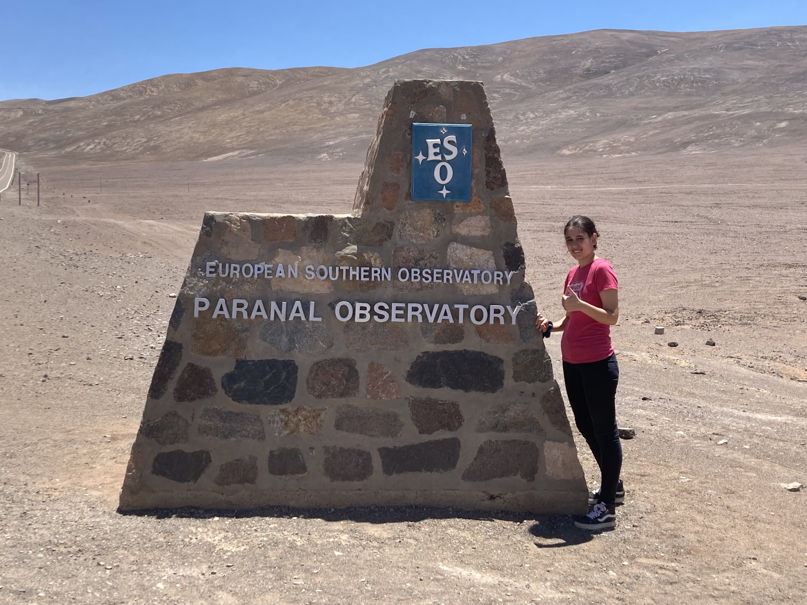

About me
I'm Clàudia, a PhD student at the University of Cambridge. I'm originally from Spain, and moved to study my Bachelors and Masters at the University of Manchester. I am currently on the fourth year of my PhD in Cambridge, supervised by Professor Didier Queloz, as a member of the SPECULOOS project.
I am interested in all things exoplanets, but my PhD work has focused on ground-based transit observations in the near infrared. I have worked on the CMOS detector, SPIRIT, in the SPECULOOS Southern Observatory, to assess the capabilities and prospects of CMOS detectors in astronomy. Even though my research has focused on observational astronomy, I am also interested in exoplanet characterisation, demographics and evolution. In general, I am interested in the process and research of exoplanet search and discovery, all the way from instrumentation work and observations to theoretical interpretation and population studies.
Outside of work I enjoy lifting weights, reading books, playing board- and videogames, and meeting new people! If you want to connect, feel free to reach out through my Contact page or email me at cj467[at]cam.ac.uk